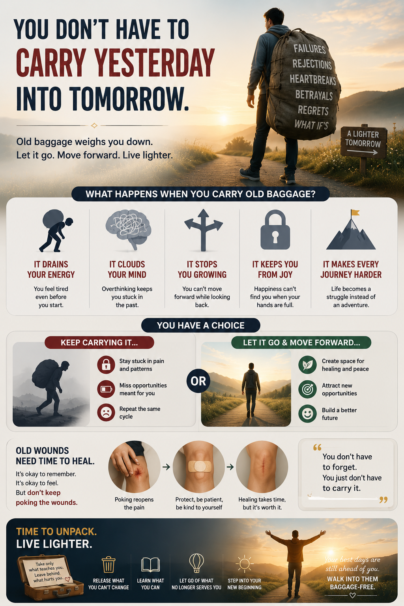

Every wound leaves two things: a scar, and a story you keep telling about it. The scar heals on its own.

01What Carrying Costs
Drains Energy
Tired before you even start.
Clouds the Mind
Overthinking keeps you in the past.
Stops You Growing
Can't move forward looking back.
Blocks the Joy
Full hands can't hold anything new.
02The Second Arrow
The Buddha's parable: the first arrow is the event — unavoidable. The second is the replay — optional, self-inflicted.
Pain is arrow one. Suffering — the reliving, the resenting — is the one you fire yourself.
03Reopening Doesn't Speed Healing
Psychologist Susan Nolen-Hoeksema's research on rumination: dwelling doesn't resolve pain, it prolongs it. Same as poking a scab.
04What the Old Texts Already Knew
Remembering isn't the problem. Stanford's forgiveness research found the same thing the old texts did: it's the grip, not the memory, that costs you. Put down the rope. Keep the scar. Walk anyway.
05Setting It Down
Release What You Can't Change
The event is fixed. Your grip on it isn't.
Learn What You Can
Keep the lesson. That's the only part worth the weight.
Let Go of What No Longer Serves
Healing takes time. Reopening it doesn't speed that up.
Step Into the New Beginning
Baggage-free isn't memory-free. It's grip-free.
The part worth sitting with
You don't have to forget. You just don't have to carry it.